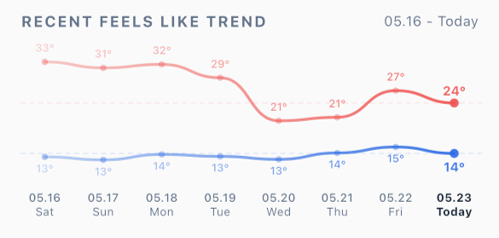
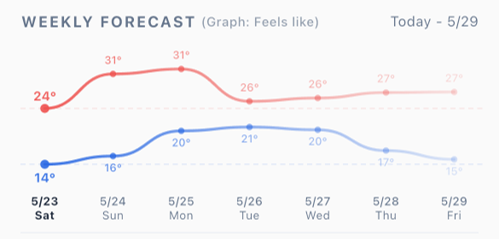
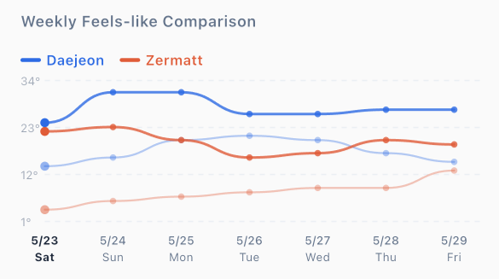
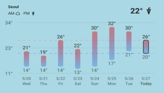
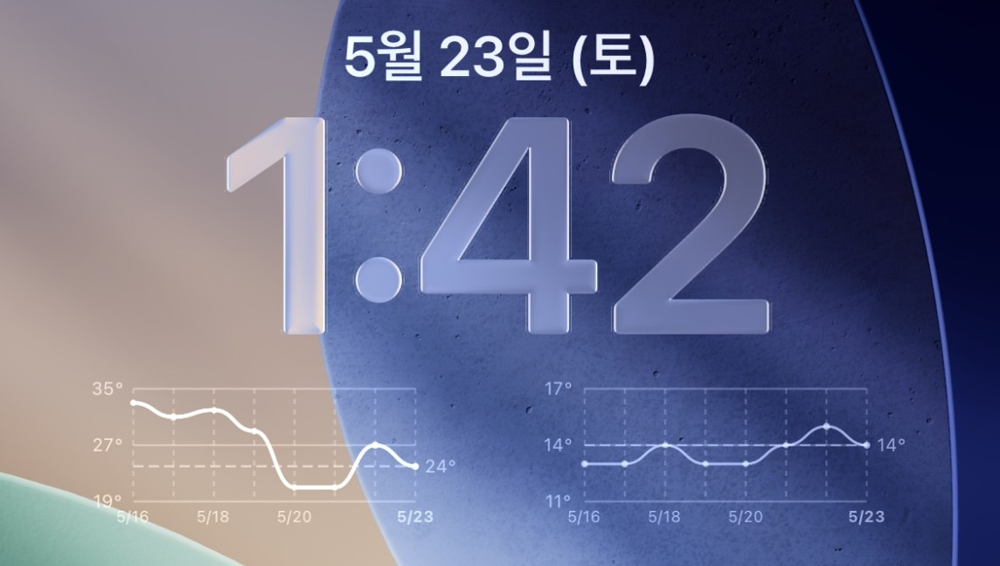
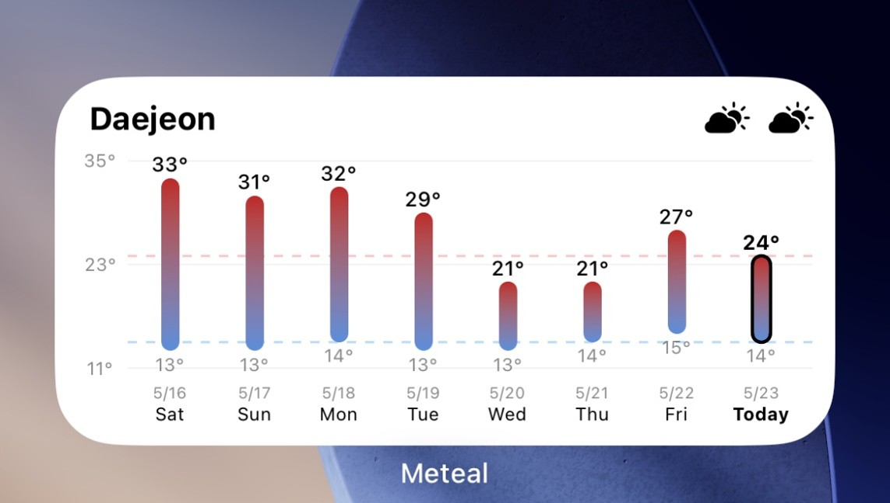

앱 기능
단일 지역과 그룹 화면에서 체감온도 흐름과 지역별 날씨를 빠르게 비교할 수 있습니다.
단일 지역 그래프


그룹 주간 요약

지역 및 그룹 관리 구조
| 항목 | 설명 |
|---|---|
| 단일 지역 | 개별 등록된 지역 목록 |
| 그룹 | 여러 지역을 묶어 비교하는 목록 |
| 그룹 내 지역 | 그룹 내에서 비교하는 지역들 |
| 단일 지역 중복 | 동일 지역은 두 번 등록 불가 |
| 그룹 내 중복 | 동일 지역은 같은 그룹 내 두 번 등록 불가 |
| 지역 변경 | 단일 지역 목록의 기존 지역으로 변경 불가 |
검색 방식
지역 검색은 현재 설정된 언어의 지역명과 GeoNames 기본 영문명을 함께 검색합니다.
- 먼저 앱에 설정된 언어의 지역명으로 검색하고, 같은 검색어를 GeoNames의 기본 영문/ASCII 지역명에서도 추가로 찾습니다.
- 따라서 설정 언어와 관계없이 영어 지명으로도 검색할 수 있습니다.
- 원하는 지역이 현재 설정된 언어로 검색되지 않으면 영어 지명으로 다시 검색해 보세요. 일부 지역은 GeoNames 데이터에 해당 언어 이름이 없거나 표기가 다를 수 있습니다.
날씨 새로고침 방법
| 화면 | 새로고침 방법 |
|---|---|
| 단일 지역 화면 | 아래로 당겨서 새로고침 |
| 그룹 화면 | 아래로 당겨서 그룹 데이터 새로고침 |
| 오류 화면 | 재시도 버튼 탭 |
| 지역 변경 시 | 자동 새로고침 |
| 언어 변경 시 | 새로고침 + 위젯 레이블 업데이트 |
지역 및 그룹 등록 한도
Meteal은 무료 범위 내에서 기본 기능을 제공하며, 초과 시 리워드 광고 시청이 필요합니다.
| 기능 | 무료 범위 | 광고 필요 시점 | 최대 한도 |
|---|---|---|---|
| 단일 지역 | 2개까지 | 3번째부터 | 최대 7개 |
| 그룹 생성 | 2개까지 | 3번째부터 | 최대 5개 |
| 그룹 내 지역 | 그룹당 2개까지 | 각 그룹 3번째부터 | 그룹당 최대 5개 |
광고 안내
리워드 광고는 무료 범위 초과 시 지역/그룹 추가에 필요합니다. 아래의 경우 광고가 로드되지 않을 수 있습니다:
- 불안정한 네트워크 상태
- 광고 재고 부족
- 서버 응답 지연
- 기기 또는 OS 제한
- 일시적인 서비스 장애
광고 로드 실패 시 처리 방식
인터넷 연결은 되어 있지만 광고 서버 응답 지연, 광고 재고 부족, 일시적인 서비스 문제 등으로 리워드 광고를 불러오지 못한 경우에는 기능 사용을 막지 않고 계속 진행할 수 있습니다. 이때 앱 하단에 광고를 건너뛰고 진행된다는 안내가 약 3초간 표시됩니다.
인터넷 연결이 없는 경우에는 광고를 불러올 수 없으므로 추가 기능 사용이 일시적으로 제한되며, 네트워크 오류 안내가 표시됩니다.
또한 불필요한 광고 요청이 반복되지 않도록 배너 광고 재시도 횟수와 재시도 간격을 제한하고, 네트워크가 복구된 뒤에는 잠시 안정화 시간을 둔 후 광고를 다시 요청합니다.
광고 요청 안정화 정책
| 항목 | 처리 방식 |
|---|---|
| 배너 광고 재시도 | 연속 실패 시 최대 5회까지 재시도하며, 기준을 초과하면 약 30분 동안 재시도를 늦춥니다. |
| 네트워크 복구 후 요청 | 네트워크가 복구되면 즉시 요청하지 않고 약 5초간 안정화 시간을 둔 뒤 광고를 다시 요청합니다. |
| 보상형 광고 사전 로드 | 사전 로드에 실패하면 약 2분 후 다시 시도합니다. |
| 리워드 광고 로드 실패 | 인터넷 연결이 있으면 광고 서버 또는 재고 문제로 보고 기능 사용을 허용하며, 하단 안내를 약 3초간 표시합니다. |
| 오프라인 상태의 광고 실패 | 인터넷 연결이 없으면 추가 기능 사용을 일시적으로 제한하고 네트워크 오류 안내를 표시합니다. |
공통 표기 방식
Meteal은 시간별 데이터를 앱 화면에 맞게 요약해 하루, 오전, 오후 단위로 표시합니다.
| 항목 | 표기 방법 |
|---|---|
| 하루 날씨 정보 | 대상 시간대에서 가장 많이 나타난 날씨 상태를 표시합니다. |
| 오전 날씨 정보 | 오전 시간대에서 가장 많이 나타난 날씨 상태를 표시합니다. |
| 오후 날씨 정보 | 오후 시간대에서 가장 많이 나타난 날씨 상태를 표시합니다. |
| 오전 온도 정보 | 오전 시간대의 온도 데이터를 평균 또는 대표값으로 요약해 표시합니다. |
| 오후 온도 정보 | 오후 시간대의 온도 데이터를 평균 또는 대표값으로 요약해 표시합니다. |
| 강수량, 풍속, 습도, 강수확률 | 각 표시 옵션의 성격에 맞게 합계, 평균, 확률 등으로 요약해 표시합니다. |
현재 온도와 시간별 온도가 다를 수 있는 이유
Meteal의 현재 온도는 더 현재 시점에 가까운 값을 표시하기 위해 Open-Meteo의 current 데이터를 우선 사용합니다. current 데이터는 15분 단위의 날씨 모델 데이터를 기반으로 제공됩니다.
반면 시간대별 표와 그래프에 표시되는 온도는 hourly 데이터를 사용하며, 1시간 단위의 기상 정보를 기준으로 표시됩니다. 따라서 현재 온도와 같은 시간대의 hourly 온도는 서로 다를 수 있습니다.
또한 Meteal의 날씨 정보는 특정 관측소의 실측값을 그대로 표시하는 방식이 아니라, 선택한 지역 좌표를 기준으로 Open-Meteo가 여러 기상 모델 데이터를 조합해 제공하는 예측값을 사용합니다. 지역, 고도, 모델 해상도, 보간 방식에 따라 각 국가 기상청 앱이나 관측소 자료와 차이가 있을 수 있습니다.
날씨 상태 표시 기준
Open-Meteo API의 날씨 코드를 기반으로 아래와 같이 날씨 상태를 표시합니다.
| 코드 | 표시 | 아이콘 |
|---|---|---|
| 0 | Clear | ☀️ |
| 1 | Mostly Clear | 🌤️ |
| 2 | Partly Cloudy | ⛅ |
| 3 | Cloudy | ☁️ |
| 45, 48 | Fog | 🌫️ |
| 51, 53, 55, 56, 57, 61, 63, 65, 66, 67, 80, 81, 82 | Rain | 🌧️ |
| 71, 73, 75, 77, 85, 86 | Snow | ❄️ |
| 95, 96, 99 | Thunderstorm | ⛈️ |
앱 날씨 데이터 저장 및 새로고침
데이터 범위: 시간별 (과거 7일 + 예보 7일), 일별 (과거 7일 + 예보 7일)
포함 항목: 기온, 체감온도, 강수량, 강수 확률, 습도, 운량, 날씨 코드, 풍속/풍향, 일출/일몰
캐시 유지 시간
| 데이터 유형 | 캐시 유지 시간 |
|---|---|
| 시간별 날씨 | 60분 |
| 일별 날씨 | 6시간 |
| 전날 데이터 | 24시간 |
| 현재 날씨 | 60분 (current 데이터 우선 사용) |
위젯 설명
Android 위젯
Android 홈 화면 위젯은 배경이 투명하게 표시되어 사용자의 홈 화면 배경과 자연스럽게 어울립니다.

iOS 위젯
iOS 홈 화면 위젯은 라이트 모드와 다크 모드에 맞춰 배경과 색상이 자동으로 조정됩니다.


위젯 온도 표시 기준
위젯에 표시되는 현재 온도 숫자는 현재 체감온도입니다. 위젯의 체감온도 중심 정보와 일관되도록 Open-Meteo의 current apparent_temperature 데이터를 우선 사용합니다.
위젯의 그래프도 최근 8일의 체감온도 최고/최저 흐름을 표시합니다. 다만 현재 체감온도 숫자는 현재 시점의 current 데이터를, 그래프는 일별 최고/최저 데이터를 사용하므로 서로 값이 다를 수 있습니다.
오전/오후 날씨 정보는 하루 중 대표 시간대의 날씨 요약으로 표시되며, 현재 체감온도와는 별도로 계산됩니다.
위젯 데이터 새로고침
Android
약 1시간마다 백그라운드 작업 실행, Open-Meteo 전체 범위 데이터 가져옴, 위젯용 부분 데이터 저장
위젯 저장 데이터
iOS
앱 백그라운드 새로고침 경로 + 위젯 자체 새로고침 경로 병행
위젯 자체 새로고침: 마지막 새로고침 후 1시간 이상 경과 + 좌표 존재 시 자동 실행